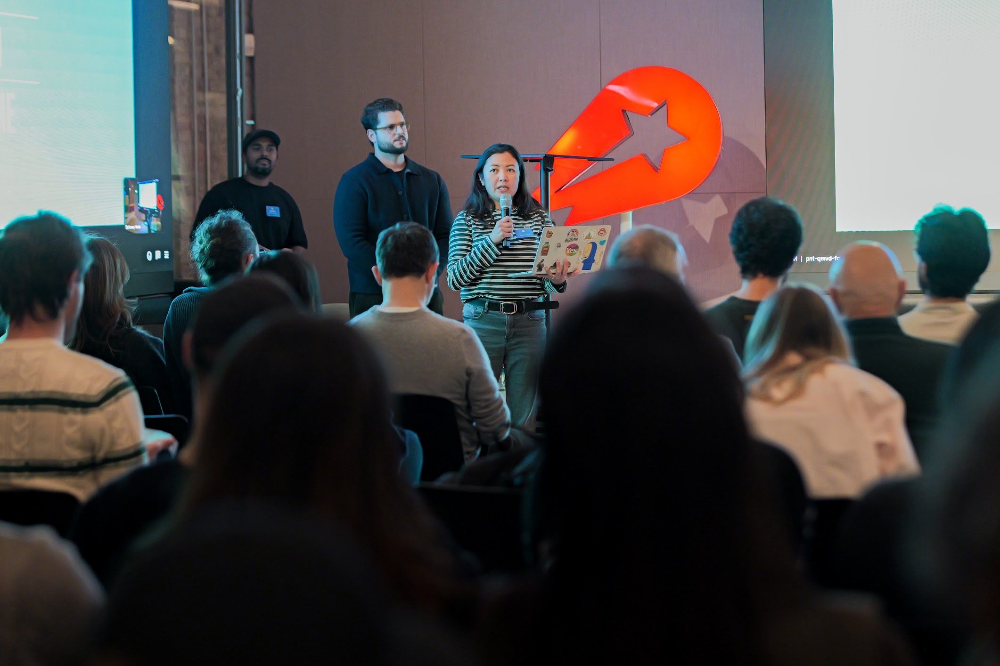
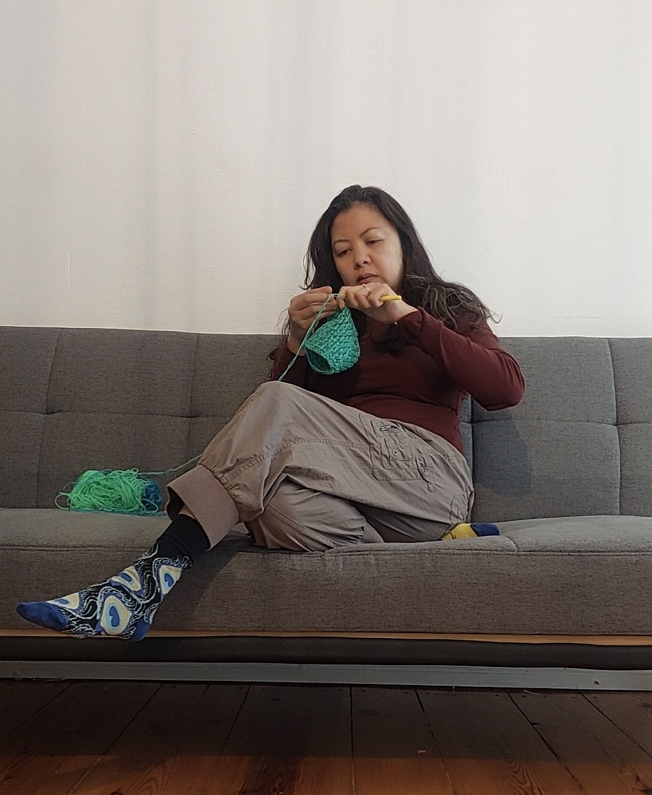

I'm originally from the Philippines and now live in Berlin, after nearly a decade in Ireland and a few years in Singapore. I like getting things done. In my first two years here I organised product design events averaging 70 attendees, got to B1 German, joined an art market, and built my own costing and profit & loss app. I recently learned to crochet too, so there has been a lot of that.
Shared insights on the UX of Visa Application with the Irish design community, from the perspective of someone with a "weak" passport.
From curating topics and sourcing venues to coaching speakers and hosting on the day, I help bring Berlin's product design community together, one event at a time.
Built and led a community for women and non-binary folks in UX, connecting with speakers, hosting events, and creating space for underrepresented voices in the industry.
What's it like to work with me?
She became known in the company for her incredible eye for detail, an ability to get through a huge amount of work under pressure and to a deadline, and an almost uncanny ability to break apart seemingly impenetrable design problems into simpler and more manageable chunks.
Tiffany consistently took the time to thoroughly review and understand the research I conducted, ensuring that her designs were not just visually compelling but also deeply user-centred.
Tiffany constantly delivers and never ceases to amaze in how she can parse everything and produce results, no matter the media. Tiffany is a fantastic communicator and I personally felt empowered working alongside her.
Tiffany showed herself to be up to every challenge, approaching each one in a clear, methodical manner where solutions were always reached and problems overcome. She has great knowledge of design systems, is an effective team player, and is always striving to grow and improve.